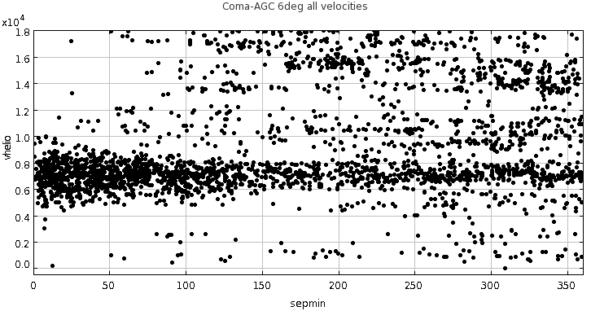
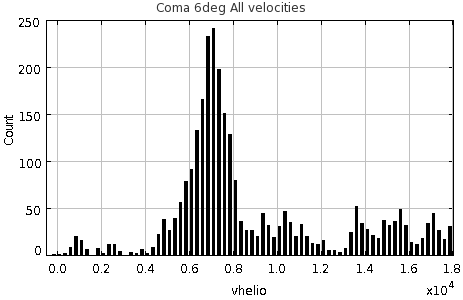

| R.A.(J2000) | |
| Dec.(J2000) | |
| Recessional velocity in heliocentric rest frame | |
| Recessional velocity in CMB rest frame | |
| Distance to the cluster (quoted in NED) | |
| Galactic latitude | |
| Galactic extinction in g-band | |
| Galactic extinction in i-band |
| R.A.(J2000) | |
| Dec.(J2000) | |
| Recessional velocity in heliocentric rest frame | |
| Recessional velocity in CMB rest frame | |
| Distance to the cluster (quoted in NED) | |
| Galactic latitude | |
| Galactic extinction in g-band | |
| Galactic extinction in i-band |

|
To the right is a similar histogram made for the Coma cluster. It contains all galaxies within
6 degrees of the center of the cluster which have measured heliocentric radial velocities.
|
 |
| Cluster | R.A.,Dec. | Helio. velocity km/s |
|---|---|---|
| Abell 999 | 155.8, 12.8 | 9683 |
| Abell 1016 | 156.8, 11.0 | 9653 |
| Abell 1142 | 165.23, 10.5 | 10463 |